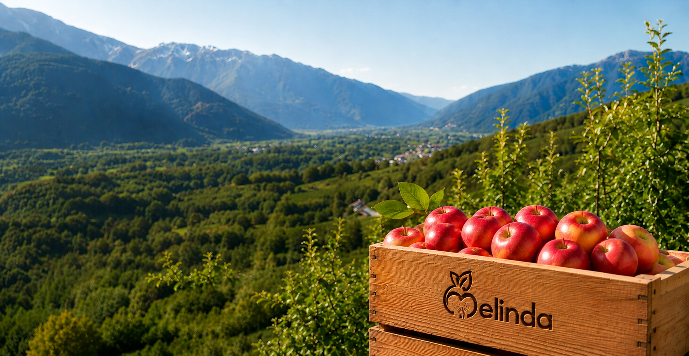
"Dietro ogni mela c'è una scelta: coltivare qualità rispettando la natura, il territorio e le persone"
Chi siamo?
Siamo un Consorzio cooperativo agricolo che riunisce 16 cooperative e migliaia di famiglie di frutticoltori
trentini. Operiamo in un territorio unico, tra la Val di Non e la Val di Sole, dove la coltivazione della mela
è parte della storia, dell’economia e del paesaggio. Il nostro obiettivo è produrre mele di qualità,
sostenere il reddito dei soci e contribuire allo sviluppo del territorio, integrando la sostenibilità in tutte le
fasi della filiera: dalla coltivazione alla conservazione, dal confezionamento alla distribuzione.


Il nostro approccio alla sostenibilità
Per noi sostenibilità significa trovare un equilibrio tra produzione, ambiente, persone e territorio. Vuol dire
coltivare con attenzione, evitare sprechi, usare meglio le risorse naturali, investire in soluzioni più
efficienti e mantenere un rapporto corretto con chi lavora con noi e con le comunità locali. In altre parole,
significa fare agricoltura pensando non solo al presente, ma anche al futuro.
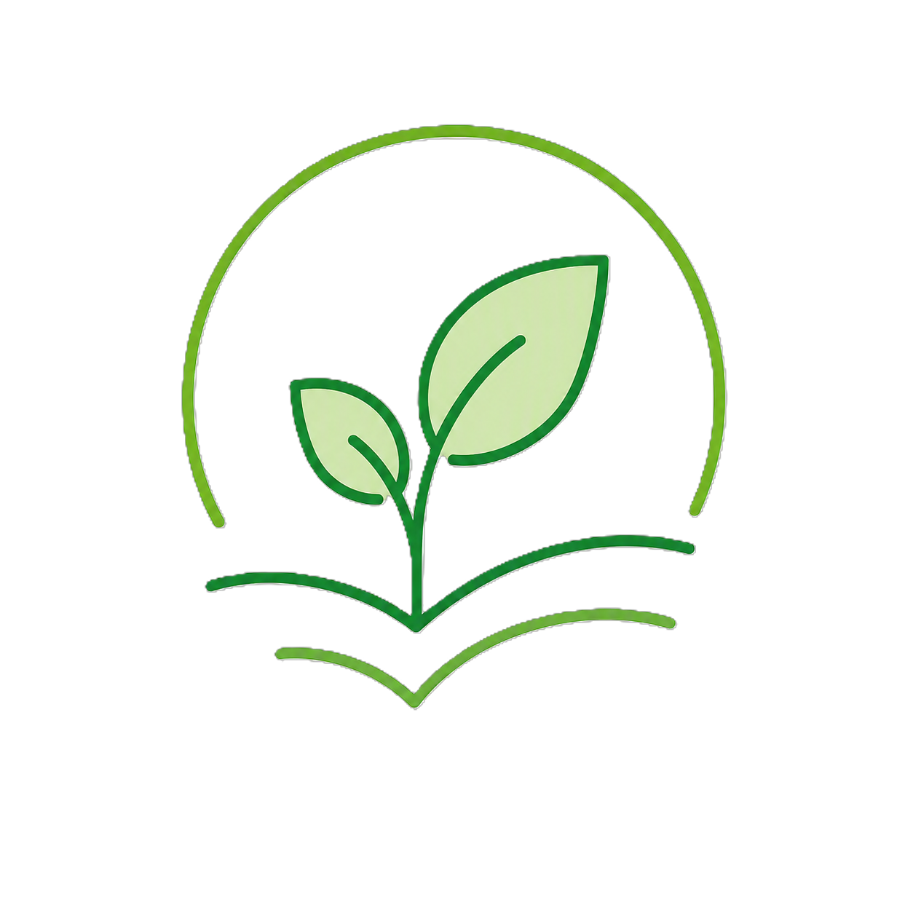
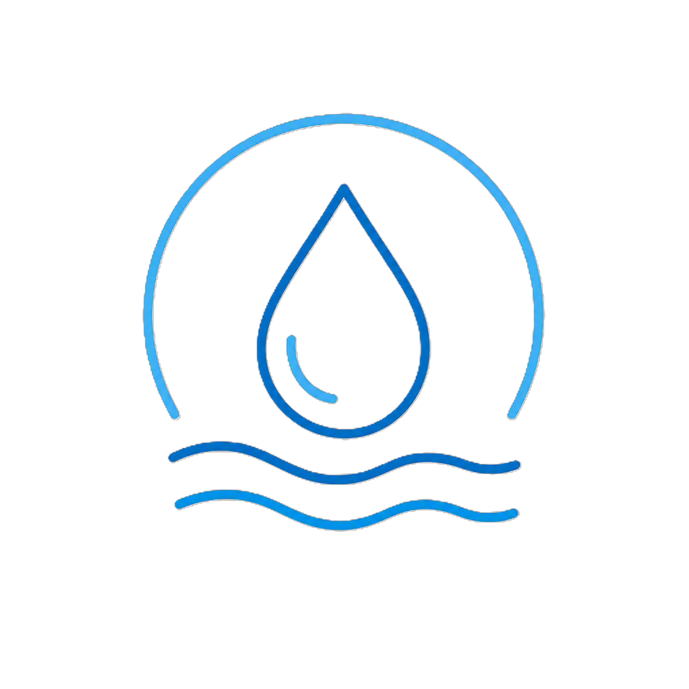
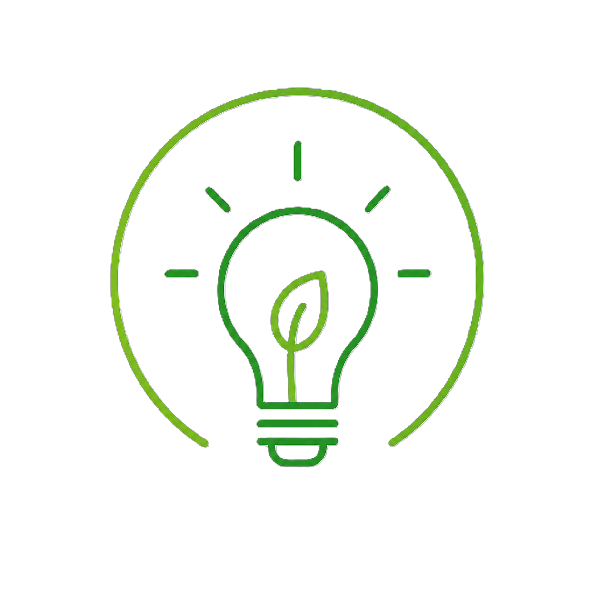
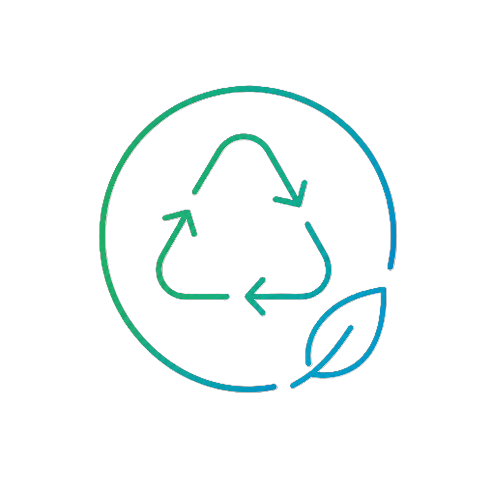
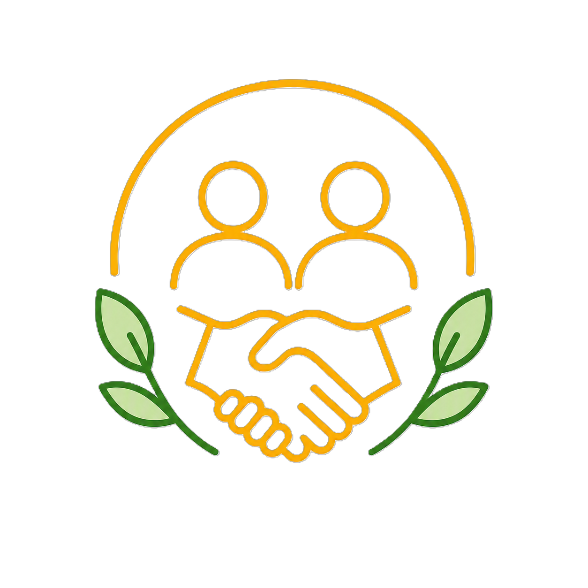
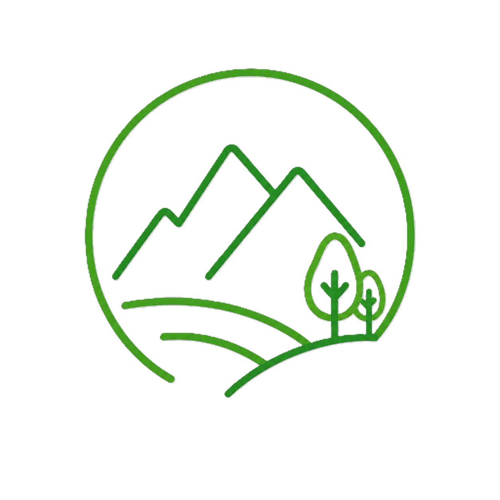
Le azioni che fanno la differenza
Proteggiamo il territorio in cui coltiviamo

Proteggiamo il territorio in cui coltiviamo.
La qualità delle nostre mele dipende dalla salute del territorio. Per questo adottiamo sistemi di produzione
integrata e biologica, utilizziamo gli agrofarmaci solo quando strettamente necessario e sotto controllo
tecnico e promuoviamo pratiche agricole a basso impatto ambientale. Abbiamo inoltre sviluppato le Oasi
Biologiche, aree in cui le condizioni del territorio favoriscono la coltivazione biologica e una gestione
ancora più attenta dell’ambiente.
Usiamo le risorse in modo più responsabile
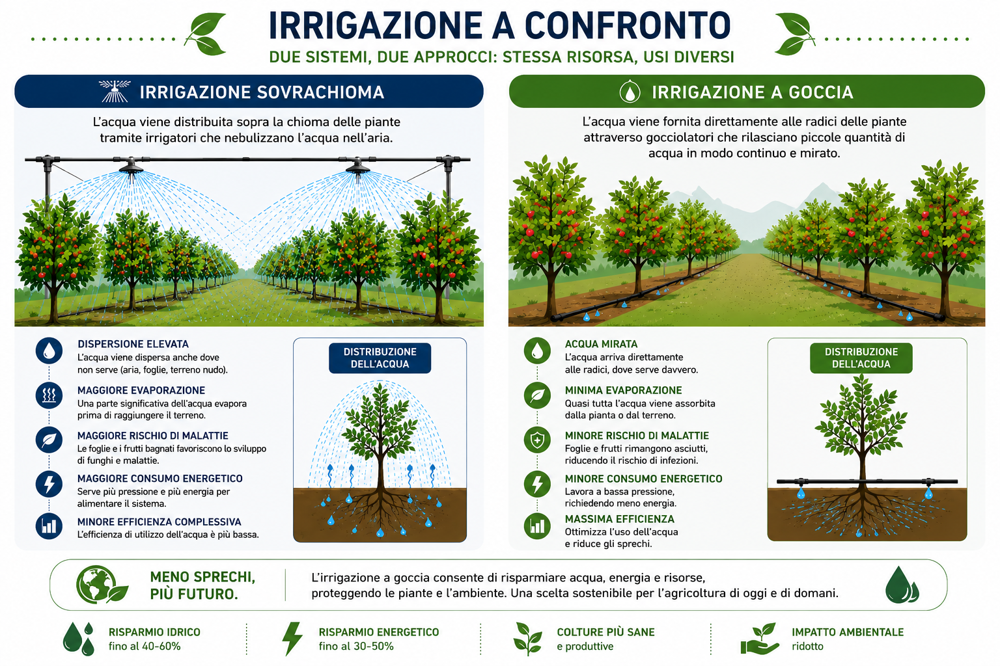
Usiamo acqua ed energia con maggiore attenzione.
L’acqua è una risorsa essenziale per la frutticoltura e per questo lavoriamo per utilizzarla in modo più
efficiente, ad esempio attraverso sistemi di irrigazione a goccia e impianti per la filtrazione e il recupero
dell’acqua negli stabilimenti. Anche sul fronte energetico il nostro obiettivo è ridurre l’impatto
ambientale, scegliendo fonti rinnovabili e soluzioni che ci aiutano a contenere consumi ed emissioni.
Innoviamo per ridurre il nostro impatto
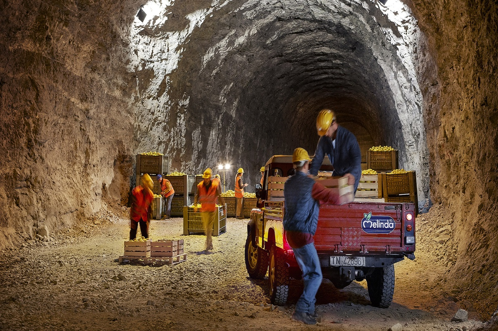
Uno dei progetti che rappresenta meglio il nostro impegno è quello delle Celle Ipogee, il sistema di
conservazione delle mele all’interno della montagna. Questa soluzione ci permette di sfruttare le
proprietà naturali della roccia per ridurre il consumo di energia, contenere le emissioni di CO₂, limitare
l’uso di acqua e diminuire l’impatto paesaggistico delle strutture di stoccaggio. Investiamo inoltre in
varietà resistenti, ricerca e nuove tecnologie per rendere la frutticoltura sempre più sostenibile e preparata
alle sfide climatiche.
Riduciamo l'impatto del confezionamento
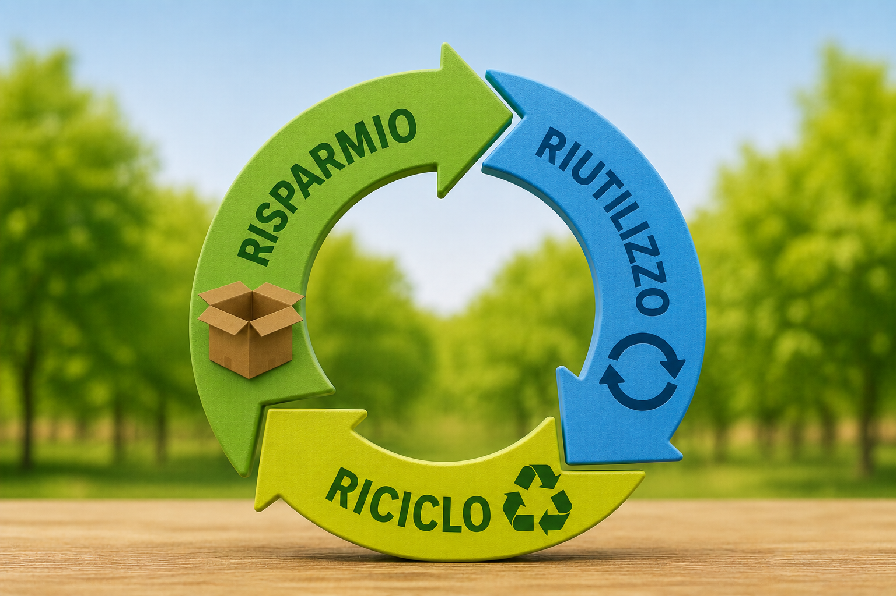
Anche il confezionamento rientra nel nostro percorso di sostenibilità. Per questo adottiamo una logica
basata su riduzione, riutilizzo e riciclo, privilegiando materiali riciclabili, imballaggi da fonti rinnovabili e
soluzioni capaci di limitare l’impiego di materiali non rinnovabili.
Il nostro obiettivo è ridurre l’impatto ambientale del packaging senza compromettere la protezione, la
conservazione e la qualità del prodotto. La sostenibilità della filiera, infatti, passa anche dalle scelte che
accompagnano le mele fino al consumatore finale.
Mettiamo al centro
chi lavora con noi
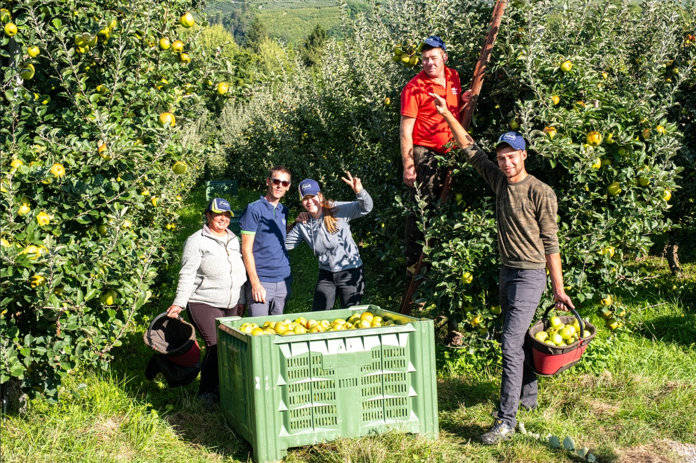
La sostenibilità passa anche dalle persone.
Per noi non esiste sostenibilità senza attenzione per chi lavora nella filiera.
Soci, dipendenti e lavoratori
stagionali sono una parte fondamentale del mondo Melinda, e per questo promuoviamo sicurezza,
formazione e condizioni di lavoro corrette. Crediamo che investire sulle persone significhi rendere più
forte l’intero sistema produttivo e costruire una filiera agricola più responsabile.
Cresciamo insieme
alle nostre valli
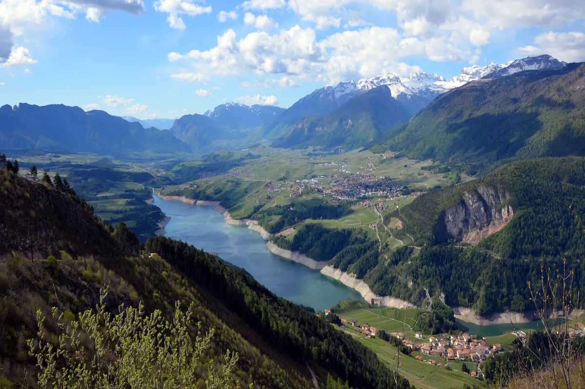
Il nostro lavoro è strettamente legato alla Val di Non e alla Val di Sole, territori che non rappresentano solo
il luogo della produzione, ma anche la nostra identità. Per questo vogliamo contribuire alla loro crescita,
sostenendo una filiera radicata localmente, il lavoro delle famiglie agricole e il rapporto tra agricoltura,
paesaggio, turismo e comunità. Per noi essere sostenibili significa anche lasciare un valore concreto al
territorio in cui operiamo.
Lo sapevi?

Tuteliamo le api perché sono fondamentali per l'impollinazione dei nostri meleti e rappresentano un'importante risorsa per la salvaguardia dell'ambiente. Collaboriamo con gli apicoltori favorendo il posizionamento delle arnie all'interno dei frutteti, creando un rapporto di reciproco beneficio tra apicoltura e frutticoltura. Attraverso il Progetto Trentino Frutticolo Sostenibile monitoriamo la qualità biologica dei suoli mediante l'indice QBS-ar, contribuendo alla tutela della biodiversità del territorio.
Il nostro bilancio di sostenibilità 2023
Il Bilancio di Sostenibilità 2023 è lo strumento attraverso cui raccontiamo in modo trasparente il nostro
impegno e rendiamo conto delle azioni intraprese in materia di ambiente, innovazione, persone e territorio.
Il report raccoglie le principali iniziative sviluppate da Melinda per migliorare la sostenibilità della filiera,
valorizzare le risorse naturali, innovare i processi produttivi e rafforzare la responsabilità sociale del
Consorzio.
Per noi questo documento non è soltanto una rendicontazione, ma anche un impegno di chiarezza verso
soci, lavoratori, clienti, comunità e tutti coloro che vogliono conoscere più da vicino il nostro modo di fare
impresa agricola.
Visita il bilancio di sostenibilità 2023
Contatti
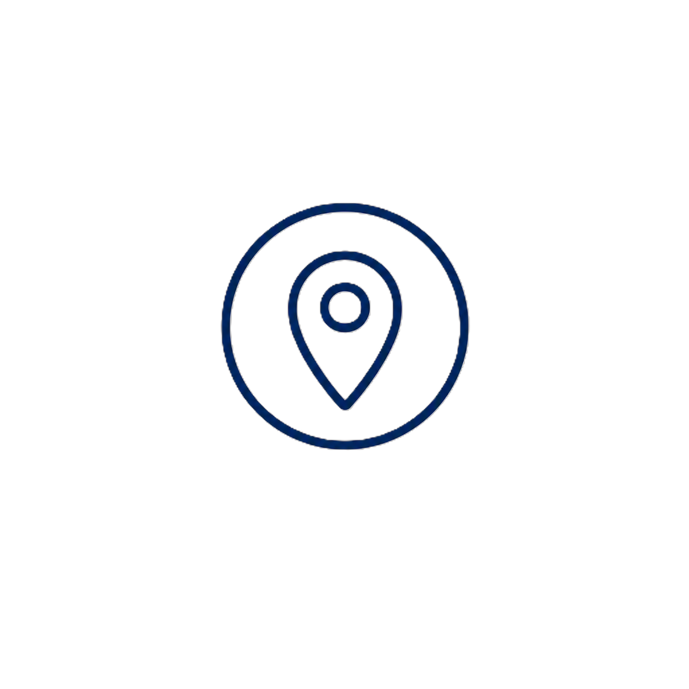
Via Trento, 200 38023 Cles (TN)
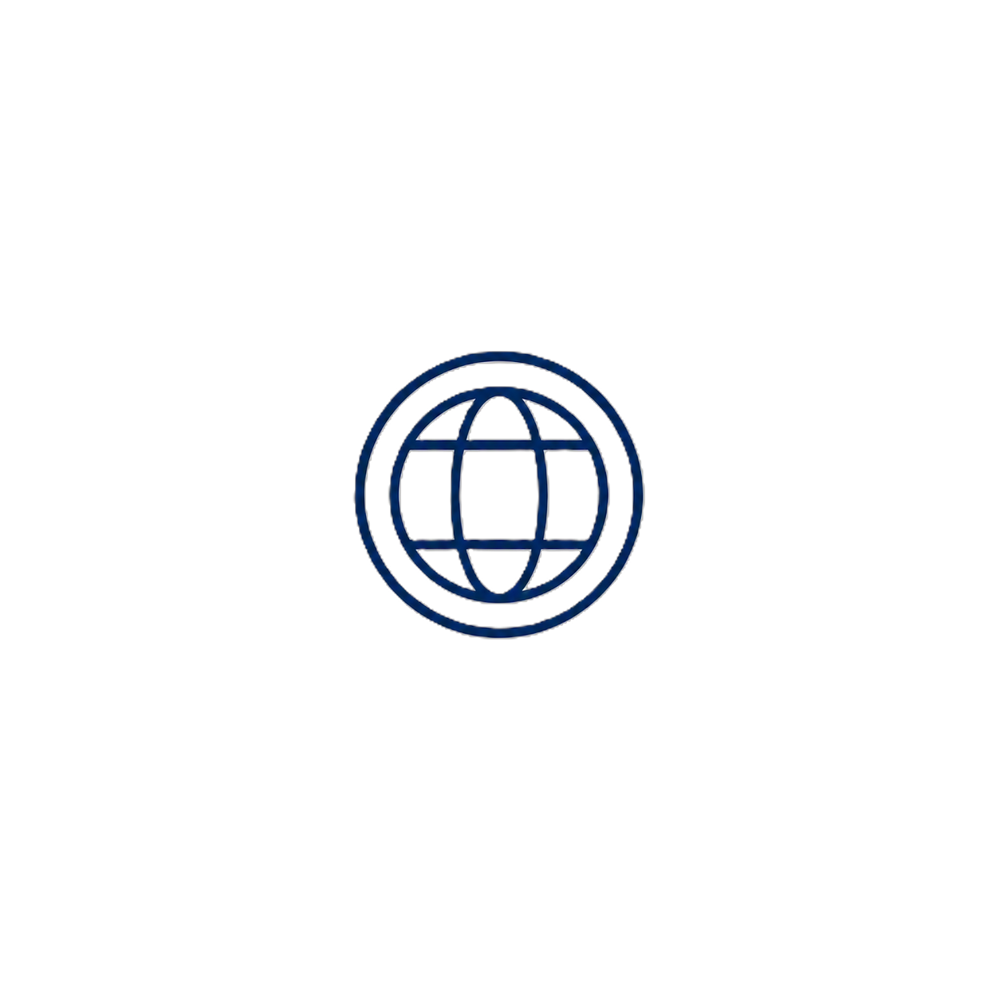
www.melinda.it